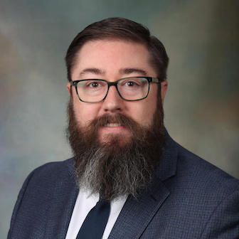

Kyle W Singleton
Curriculum Vitae
PROFESSIONAL EXPERIENCE
Senior Data Science Analyst: Apr 2022 - Present
Mayo Clinic, Phoenix, AZ
Precision Neurotherapeutics Program
Mathematical Neuro-Oncology Lab
- Collaborated on development of deep learning networks for automated magnetic resonance image (MRI) identification and automated tumor segmentation.
- Applied predictive radiomics models of T-cell abundance to 200+ multi-modality MRI cases.
- Implemented end-to-end predictive mathematical pipeline and API.
- Executed routine SQL queries and ETL tasks on clinical and imaging data to support research projects in the lab.
- Maintained and updated Django research website and MySQL database housing data for 2000+ patients, 200,000+ MRIs, and associated clinical and treatment records.
- Transitioned EC2 and RDS resources to current AWS standards.
Senior Research Fellow: 2019 - 2022
Mayo Clinic, Phoenix, AZ
Precision Neurotherapeutics Lab
Mathematical Neuro-Oncology Lab
- Spearheaded development of machine learning algorithms for image pre-processing, normalization, and registration pipelines in Python.
- Processed MRIs and stereotactic surgical coordinates from 70+ image-guided biopsy clinical trial patients with the previous algorithms.
- Coordinated lab efforts to train artificial intelligence algorithms on the Mayo Clinic Cloud and Google Platform.
- Maintained multiple on-premises GPU computer systems for deep learning research.
- Contributed informatics and imaging knowledge to 20+ grant submissions (U01, U54, P01), including a funded $12,000,000 U54 center grant.
Faculty Associate: 2018 - 2022
Arizona State University, Tempe, AZ
College of Health Solutions
- Taught online special topics courses for master’s students.
- Provided feedback and instruction to students during seven-week courses.
- Designed new lecture videos and course assignments to update outdated course information.
- Transitioned course lectures and materials from Blackboard to Canvas.
Research Fellow: 2016 - 2019
Mayo Clinic, Phoenix, AZ
Precision Neurotherapeutics Lab
- Analyzed 4 patient cohorts with varied drug treatment regimens using a novel clinical response metric, Days Gained.
- Generated 3D models of brain MRI and simulated tumor models for videos and 3D prints used to educate patients about their disease.
- Enhanced image registration tools in Django and Python framework resulting in 2500 newly applied registrations.
- Supported multiple research projects through SQL querying and ETL data wrangling techniques.
- Conceptualized and initiated development of an image pre-processing and normalization pipeline.
Graduate Student Researcher: 2012 - 2016
UCLA Medical Imaging Informatics, Los Angeles, CA
- Supervised team of three graduate students, reviewing clinical and imaging data from medical records.
- Created retrospective dataset from 500+ UCLA brain cancer cases.
- Employed lung and brain cancer data from public data repositories (National Lung Screening Trial and The Cancer Genome Atlas).
- Constructed and evaluated disease models of brain cancer survival (Glioblastoma Multiforme).
- Implemented and evaluated a novel simulation approach for interpreting the transportability (external validity) of predictive models in independent patient cohorts.
National Library of Medicine Fellow: 2008 - 2012
UCLA NLM Medical Imaging Informatics Training Program, Los Angeles, CA
- Completed coursework in medical informatics, statistics, and machine learning.
- Programmed, deployed, and supported tablet-based surveying systems used to collect medical data from 20,000+ patients in Los Angeles clinics.
EDUCATION
University of California, Los Angeles - Los Angeles, CA
Doctor of Philosophy in Biomedical Engineering - 2016
Specialization in Medical Imaging Informatics
University of Virginia - Charlottesville, VA
Bachelor of Science in Biomedical Engineering, Minor in Computer Science - 2006
DISSERTATION
Investigating Predictive Disease Model Transportability through Cohort Simulation and Causal Analysis
Advisors: Alex A.T. Bui and William Hsu
PUBLICATIONS
Google Scholar
TEACHING
INSTRUCTOR
Arizona State University
BMI 598 Topic: Biomedical Device Design - Spring 2022
BMI 598 Topic: Biomedical Device Design - Spring 2021
BMI 598 Topic: Biomedical Device Design - Spring 2020
BMI 598 Topic: Biomedical Device Design - Spring 2019
BMI 598 Topic: Imaging in Diagnostics - Spring 2018
GUEST LECTURER
Arizona State University
BMI 598 – Topic: Imaging in Diagnostics - Spring 2019
University of California, Los Angeles
BME 220 Introduction to Medical Informatics - Fall 2012
BME 223A Programming Laboratory for Medical Informatics I - Fall 2013
TEACHING ASSISTANT/READER
University of California Los Angeles
BME 223A Programming Laboratory for Medical Informatics I - Fall 2013
FELLOWSHIPS AND AWARDS
First Place Student Paper - Knowledge Discovery and Data Mining Working Group (KDDM-WG): 2014
Finalist - AMIA 2014 Student Paper Competition: 2014
UCLA Graduate Student Researcher: 2012 - Present
NLM Biomedical Informatics Training Fellowship: 2008 - 2012
NIH Postbaccalaureate Intramural Research Training Award: 2006 - 2008